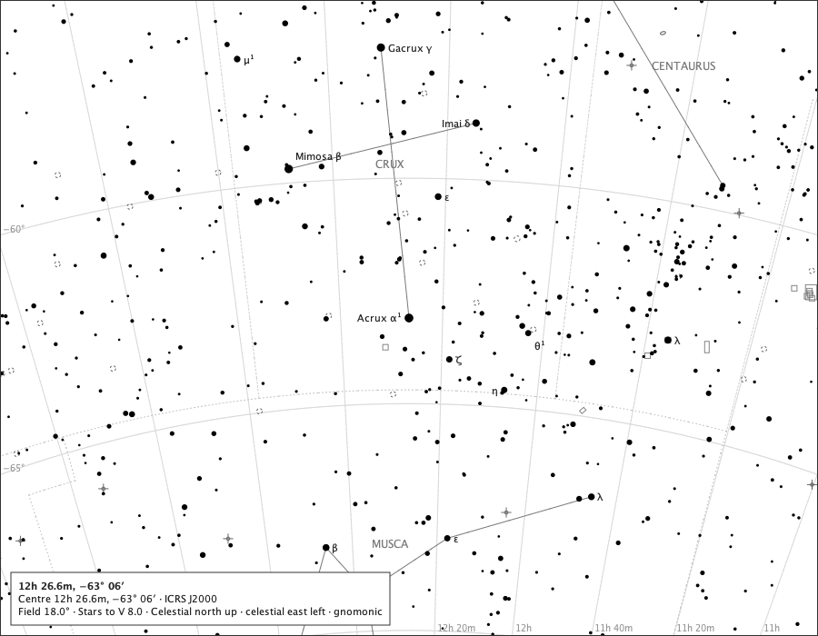

Core chart
The Southern Cross

- Region
- Crux and Musca
- Field
- 18°
- Ink
- Core chart ink only.
- Source
- docs/studies/coordinate-grid/crux-18.png
- Produced
- Production render; regenerated and compared against its generator by make evidence-contracts. v1.7.0 tree (8820a6d).